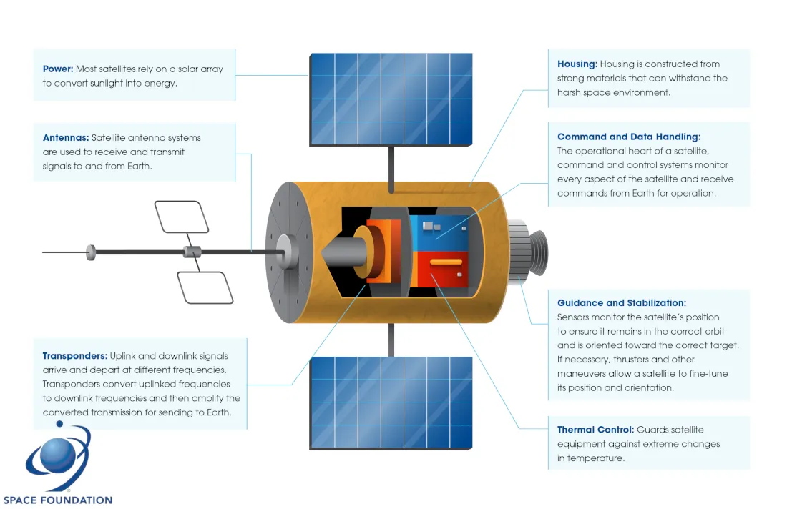
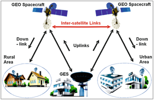
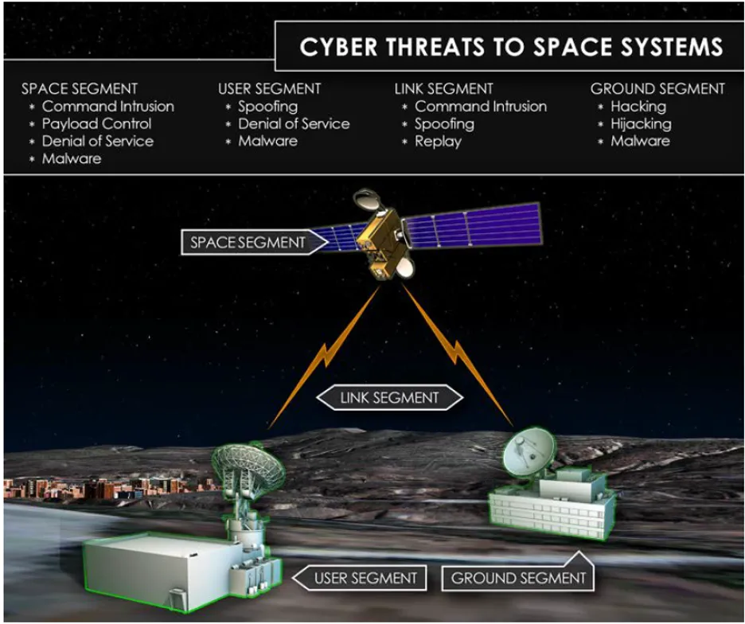

Quando os invasores atacam uma espaçonave, provavelmente procuram impactar a missão: imagens, coleta de sinais ou outro serviço. Para estudar o risco, é preciso enxergar o sistema inteiro, da estação terrestre ao veículo espacial.
01 / Arquitetura da missão
Os satélites combinam hardware e software embarcados em um ambiente fisicamente isolado. O sistema espacial reúne segmento terrestre, segmento de enlace e segmento espacial. As táticas e controles variam conforme o segmento.
Um veículo espacial inclui AD&C (atitude), C&DH (comando e dados), EPDS (energia), propulsão, estruturas, TT&C e controle térmico. Cada subsistema tem uma função de missão e uma superfície de risco distinta.

02 / Comunicação via satélite
Um sistema de comunicações consiste no segmento terrestre, com uma ou mais estações, e no segmento espacial, com naves e cargas úteis. As notas distinguem três fluxos:
- Uplink: comandos e dados enviados da Terra ao satélite.
- Downlink: telemetria e dados enviados do satélite à Terra.
- Crosslink: comunicação entre satélites.
“Receber comandos” e “transmitir dados” descrevem o fluxo do ponto de vista do satélite. Os canais reais dependem da missão.
Referência das notas: NASA SmallSat — Communications ↗.

03 / TT&C
Telemetria, Rastreamento e Comando (TT&C) é vital para manter contato e operar o veículo. Se a comunicação for degradada, a missão pode perder capacidade de observação ou controle. Por isso, autenticação dos comandos, proteção do enlace e segurança física da infraestrutura terrestre são temas centrais.
As notas apontam uma introdução a sistemas TT&C ↗.
04 / Riscos e prioridades
Comunicação, controle orbital e energia sustentam a missão. Uma alteração indevida em comandos, atitude ou propulsão pode afetar o serviço e a segurança operacional. Em sistemas em operação, mudanças no segmento terrestre costumam ser mais viáveis que atualizações em órbita, que precisam de avaliação rigorosa do risco de missão.
A Space Policy Directive-5 ↗, citada nas notas, destaca proteção de TT&C, interferência e falsificação, cadeia de suprimentos, ameaça interna e higiene cibernética.

05 / Roteiro de pesquisa
- Identifique a missão e seus serviços essenciais.
- Desenhe os segmentos terrestre, de enlace e espacial.
- Relacione cada subsistema à função que protege.
- Mapeie dependências de comando, autenticação e atualização.
- Priorize consequências para a missão e controles compensatórios.
O framework SPARTA ↗ oferece uma taxonomia de táticas e técnicas para o domínio espacial. As notas também apontam o catálogo de missões da SatNow ↗.
Exemplos do caderno.
Trechos preservados das anotações do ZIP. Endereços e credenciais de laboratórios foram substituídos por exemplos genéricos; comandos e observações permanecem organizados pelo capítulo.
Satelites Hacking
- Framework Sparta
Quando os invasores atacam uma espaçonave, eles provavelmente estão procurando impactar a missão. Isso pode ser imagens, coleta de sinais, etc.
- missões
Os satélites são uma combinação de hardware e software embarcados operando no ambiente fisicamente isolado do espaço. O próprio satélite pode ser comparado a um dispositivo de internet das coisas (IoT) no espaço
Space vehicle subsystems vulnerable to cyber attack target include:
- Attitude Determination and Control (AD&C)
- Command and Data Handling (C&DH)
- Electrical Power and Distribution Subsystem (EPDS)
- Propulsion Subsystem (PS)
- Structures and Mechanisms Subsystem (SMS)
- Telemetry, Tracking, and Command (TT&C)
- Thermal Control Subsystem (TCS)
A Diretiva de Política Espacial-5 (SPD-5), divulgada em setembro de 2020, destacou as seguintes medidas de segurança que devem ser consideradas para sistemas espaciais:
- Segurança física do ambiente TT&C
- Proteção TT&C usando criptografia ou autenticação
- Proteções contra interferência e falsificação
- Gerenciamento de riscos da cadeia de suprimentos
- Ameaça interna
- Siga a higiene cibernética básica, bem como a adesão às orientações do Instituto Nacional de Padrões e Tecnologia (NIST)
O satélite deve ser capaz de se comunicar, manter a órbita e fornecer energia aos componentes significativos da missão. Com base no impacto da missão do veículo espacial, esses são os três sistemas que provavelmente serão visados. Se a capacidade de comunicação for subvertida, ou seja, atacar sistemas de Telemetria, Rastreamento e Comando (TT&C), o ativo não poderá suportar sua missão. Da mesma forma, se um adversário atingir a dinâmica orbital do veículo modificando o algoritmo de controle de atitude ou disparando um propulsor para desestabilizar o veículo espacial, os efeitos seriam devastadores para a missão. Com qualquer capacidade degradada ou removida, uma missão pode ser comprometida.
Para sistemas atualmente em operação, abordar questões de segurança cibernética é principalmente relegado a atualizações no segmento terrestre. As atualizações de software podem ser feitas em órbita, mas podem ser arriscadas, portanto, geralmente não são realizadas devido à perda potencial da missão.
As táticas para atacar um sistema espacial variam dependendo do ponto de entrada ou alvo. Um sistema espacial é composto pelo segmento terrestre, o segmento de link e o segmento espacial. As táticas serão diferentes dependendo de qual segmento é atacado.
https://csps.aerospace.org/sites/default/files/2021-08/Bailey_DefendingSpacecraft_11052019.pdf
Comunicação via satélite
Um sistema de comunicações consiste
- no seguimento da terra: uma ou mais estações terrestres localizadas na terra.
- no seguimento espacial: uma ou mais naves espaciais e suas respectivas cargas úteis de comunicação.
Funções de um sistema de comunicação
- uplink: Receber comandos da Terra
- downlink: Transmitir dados para a terra
- crosslink ou inter-satélite: Transmitir ou receber informações de outro satélite.